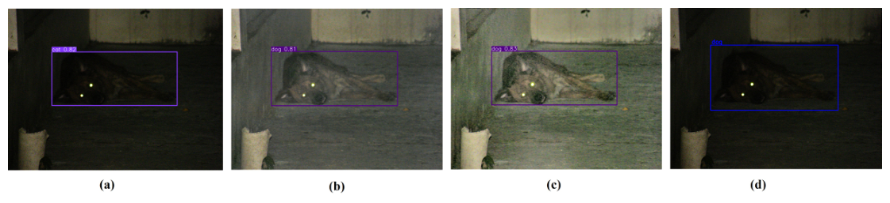
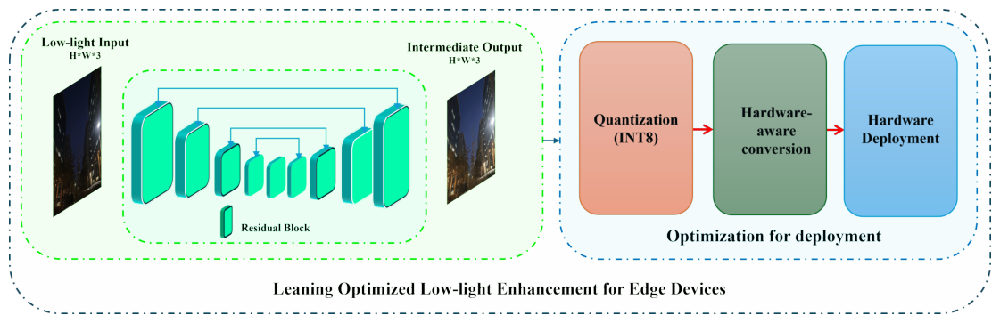
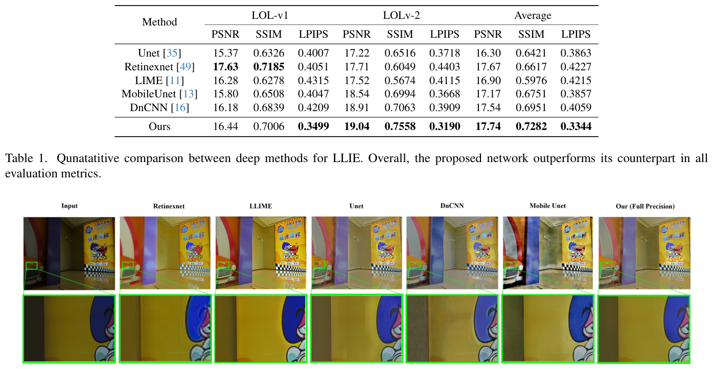
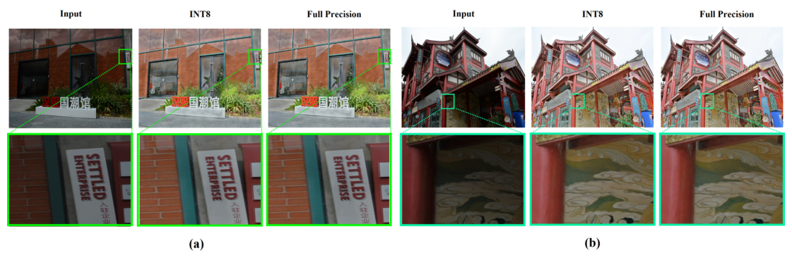
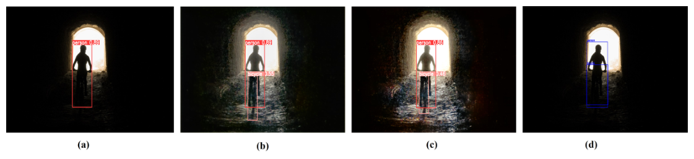
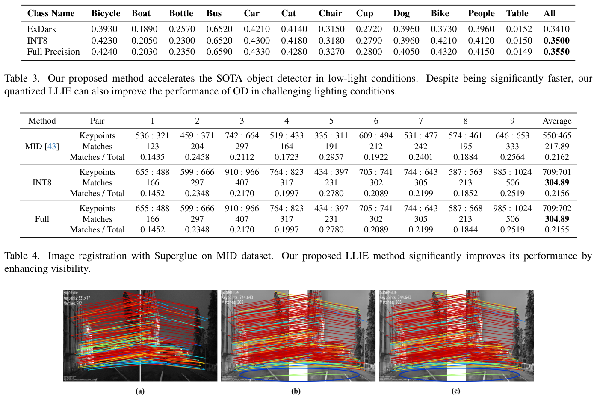

Học Tăng Cường Ảnh Thiếu Sáng Tối Ưu Cho Các Tác Vụ Thị Giác Cận Biên
Hội nghị IEEE/CVF Computer Vision and Pattern Recognition Workshops (CVPRW 2024)
Học Tăng cường Ảnh Thiếu sáng Tối ưu cho các Tác vụ Thị giác Thiết bị Cận biên (Learning Optimized Low-Light Image Enhancement for Edge Vision Tasks)
Tác giả: S M A Sharif, Azamat Myrzabekov, Nodirkhuja Khujaev, Roman Tsoy, Seongwan Kim, Jaeho Lee* Opt-AI Inc., LG Sciencepark, Seoul, Hàn Quốc {sharif, azamat, nodir, roma, swan.kim, jaeho.lee}@opt-ai.kr \Tác giả liên hệ (Corresponding author)*
Tóm tắt (Abstract) Tăng cường ảnh thiếu sáng (Low-Light Image Enhancement - LLIE) đóng một vai trò quan trọng trong các ứng dụng thị giác thiết bị cận biên (Edge Vision Applications - EVA). Mặc dù có tính ứng dụng thực tiễn rộng rãi, các phương pháp LLIE hiện có lại không khả thi do chi phí tính toán quá cao. Nghiên cứu này đề xuất một khung làm việc nhằm học cách tăng cường ảnh thiếu sáng tối ưu nhằm khắc phục những hạn chế của các phương pháp tăng cường hiện tại để tăng tốc EVA. Khung làm việc đề xuất tích hợp một mạng học sâu nhẹ và thân thiện với thiết bị di động. Chúng tôi tối ưu hóa mô hình đề xuất với độ chính xác INT8 thông qua chiến lược lượng tử hóa sau huấn luyện (Post-Training Quantization - PTQ) và triển khai mô hình trên một thiết bị biên thực tế. Mô hình LLIE đã đạt tốc độ trên 199 khung hình/giây (FPS) trên một bo mạch biên công suất thấp. Ngoài ra, chúng tôi đã đánh giá tính thực tiễn của mô hình tối ưu hóa trong việc thúc đẩy ứng dụng thị giác trong môi trường biên. Các kết quả thực nghiệm minh chứng rằng phương pháp tối ưu của chúng tôi có thể thúc đẩy đáng kể hiệu suất của các thuật toán thị giác SOTA trong các điều kiện thiếu sáng đầy thách thức cho nhiều tác vụ thị giác hàng ngày, bao gồm phát hiện đối tượng (object detection) và đăng ký ảnh (image registration).
1. Giới thiệu (Introduction) LLIE đề cập đến việc nâng cao chất lượng của các hình ảnh được chụp dưới điều kiện ánh sáng yếu và phức tạp. Việc tăng cường các hình ảnh thiếu sáng thường được coi là một trong những tác vụ phục hồi hình ảnh phức tạp nhất do thiếu hụt các chi tiết có thể nhìn thấy và nhiễu cảm biến nghiêm trọng [1, 38]. Do đó, việc tăng cường ảnh thiếu sáng đòi hỏi các kỹ thuật tái tạo toàn diện như tăng cường độ tương phản, giảm nhiễu và khôi phục chi tiết. Ngoài tầm quan trọng về mặt thẩm mỹ, LLIE còn có vô số ứng dụng trong thế giới thực, bao gồm việc tăng tốc các tác vụ thị giác thông dụng trên các thiết bị biên tiêu thụ điện năng thấp.
LLIE trên các thiết bị biên tích hợp các ứng dụng rộng rãi, từ hệ thống giám sát và an ninh đến xe tự hành và giám sát công nghiệp, thường hoạt động theo thời gian thực và phụ thuộc rất nhiều vào thông tin thị giác để ra quyết định. Đáng tiếc, hiệu suất của các ứng dụng biên như phát hiện đối tượng (Object Detection - OD), phân đoạn (segmentation), thị giác lập thể (stereo vision), v.v., bị suy giảm nghiêm trọng khi cảm biến máy ảnh chịu hiệu suất lượng tử thấp và tạo ra hình ảnh tối [38]. Việc cải thiện chất lượng của các hình ảnh chất lượng thấp như vậy có thể nâng cao khả năng phát hiện và nhận dạng đối tượng một cách chính xác, ngay cả trong điều kiện ánh sáng bất lợi. Nhìn chung, việc củng cố các hình ảnh chất lượng thấp có thể nâng cao độ an toàn và hiệu quả trong các kịch bản thế giới thực.
Các tài liệu nghiên cứu gần đây đã chứng kiến sự gia tăng mạnh mẽ trong các nỗ lực giải quyết thách thức LLIE thông qua các phương pháp tiếp cận dựa trên học máy đổi mới [18]. Các phương pháp này chủ yếu thuộc hai nhóm: Nhóm thứ nhất coi LLIE như một tác vụ dịch chuyển ảnh-sang-ảnh (image-to-image translation) [3, 8, 9, 17, 23, 28, 40, 44, 52]. Thông thường, các phương pháp này tận dụng mạng nơ-ron tích chập (CNN) để học đầu-cuối (end-to-end). Ngoài ra, một số phương pháp gần đây thuộc nhóm này [6, 51] đã kết hợp kiến trúc CNN với Transformer [42], tương tự như các phương pháp phục hồi hình ảnh gần đây [48, 55, 56]. Nhóm thứ hai của LLIE kết hợp lý thuyết Retinex [21] vào kiến trúc CNN để tăng cường ảnh thiếu sáng [4, 41, 47, 49, 50, 54, 57, 59, 60]. Tuy nhiên, hầu hết các phương pháp LLIE hiện có đều được phát triển mà không cân nhắc đến tính khả thi khi triển khai các mạng nơ-ron mới này trên các thiết bị biên. Bản chất phức tạp của các phương pháp dựa trên Retinex và dựa trên cơ chế chú ý (attention) đòi hỏi chi phí tính toán cao với các phép toán tích chập không thân thiện với thiết bị biên. Do đó, các giải pháp LLIE hiện đại nhất (SOTA) này khó có thể khả thi khi triển khai trên các thiết bị cận biên.
Để giải quyết hạn chế này và đưa nghiên cứu LLIE theo một hướng đi thực tế, chúng tôi đề xuất một khung làm việc học và triển khai LLIE mới thân thiện với thiết bị biên. Khung làm việc đề xuất kết hợp một mô hình học sâu dạng chữ U nhẹ [35] và chiến lược tối ưu hóa. Chúng tôi tối ưu hóa mô hình bằng cách tận dụng Lượng tử hóa sau huấn luyện (Post-Training Quantization - PTQ) [25] và hạ cấp độ chính xác từ trọng số dấu phẩy động sang số nguyên INT8 để đạt tốc độ suy luận nhanh hơn trong môi trường biên. Sau đó, chúng tôi triển khai phương pháp trên các thiết bị biên thực tế và ghi nhận tốc độ đạt 199 FPS. Tính thực tiễn của một mô hình LLIE độ chính xác thấp như vậy được đánh giá sâu rộng bằng cách tích hợp nó vào các tác vụ thị giác thông dụng (chẳng hạn như OD và đăng ký ảnh) [50]. Các kết quả thực nghiệm minh họa rằng mô hình tối ưu của chúng tôi có thể cải thiện đáng kể hiệu suất của các ứng dụng thị giác ngay cả trong điều kiện ánh sáng ngẫu nhiên. Theo hiểu biết tốt nhất của chúng tôi, đây là công trình công khai đầu tiên khám phá tính thực tiễn của các mô hình lượng tử hóa trong các tác vụ thị giác cận biên. Khung làm việc của chúng tôi có thể hỗ trợ các tác vụ thị giác hàng ngày như OD ngay cả trong các kịch bản cực kỳ tối, như thể hiện trong Hình 1. Các đóng góp của chúng tôi bao gồm: - Chúng tôi đề xuất một khung làm việc học LLIE cho các thiết bị biên, tích hợp một mô hình học sâu nhẹ và chiến lược triển khai trong môi trường biên. - Chúng tôi tối ưu hóa mô hình và đạt tốc độ 299 FPS trên phần cứng biên thực tế bằng cách chỉ đánh đổi một phần nhỏ điểm số độ trung thực. - Chúng tôi tích hợp mô hình tối ưu hóa để thúc đẩy hiệu suất của các tác vụ thị giác thông dụng.

Hình 1. Tăng cường tác vụ phát hiện đối tượng (OD) trong thế giới thực tận dụng khung làm việc tối ưu hóa đề xuất. (a) Ảnh thiếu sáng với YOLOv3. (b) Mô hình của chúng tôi (INT8) với YOLOv3. (c) Mô hình của chúng tôi (độ chính xác đầy đủ) với YOLOv3. (d) Dữ liệu chuẩn thực tế (cho phát hiện đối tượng).
2. Các công trình liên quan (Related Works) Phần này mô tả ngắn gọn các công trình liên quan, bao gồm các phương pháp LLIE và các phương pháp lượng tử hóa trong tăng cường hình ảnh.
2.1. Tăng cường Ảnh Thiếu sáng (Low-Light Image Enhancement) Các nhà nghiên cứu đã phát triển nhiều thuật toán tăng cường ảnh thiếu sáng để cải thiện chất lượng hình ảnh được chụp trong môi trường ánh sáng yếu, không đủ sáng. Cách tiếp cận trực tiếp nhất được sử dụng cho tác vụ này là phương pháp dựa trên cân bằng lược đồ màu (Histogram Equalization) [15, 27]. Các phương pháp này hiệu quả về mặt tính toán nhưng chỉ đôi khi tạo ra kết quả rõ nét. Trong khi đó, các thuật toán tăng cường dựa trên Retinex [21] hoạt động tốt hơn nhiều nhờ tận dụng khả năng của hệ thống thị giác con người trong việc cảm nhận màu sắc và độ sáng tương đối so với các vùng xung quanh, mang lại những cải tiến thị giác dễ chịu. Cùng với sự phát triển của các phương pháp học sâu, các mô hình học sâu hiện nay được lấy cảm hứng từ lý thuyết Retinex, chẳng hạn như Retinex-Net [49], đã cho thấy những kết quả đầy hứa hẹn cho việc tăng cường hình ảnh. Bên cạnh các mô hình CNN, kiến trúc Transformer đã được sử dụng để học hoặc điều chỉnh các tham số của Retinex và tạo ra kết quả ấn tượng. Một mô hình tiêu biểu là RetinexFormer [4], nơi một Transformer một giai đoạn được sử dụng để học thông tin chiếu sáng từ các ảnh thiếu sáng. Hơn nữa, một số cách tiếp cận dựa trên mô hình khuếch tán (diffusion), chẳng hạn như Diff-Retinex [54], đã được xây dựng, nơi các mô hình khuếch tán tạo sinh được sử dụng để học các đặc trưng ảnh thiếu sáng. Mặc dù tất cả các phương pháp này đều cho thấy kết quả xuất sắc trên tác vụ tăng cường ảnh thiếu sáng, chúng lại thiếu khả năng diễn giải. Đáng chú ý, bản chất phức tạp của các phương pháp SOTA này khiến chúng không thân thiện với thiết bị biên và không thực tế để triển khai trên các thiết bị cận biên.
2.2. Lượng tử hóa Mô hình trên Tăng cường Ảnh (Model Quantization on Image Enhancement) Lượng tử hóa mô hình là một bước tối quan trọng để triển khai các mạng nơ-ron trên thiết bị di động. Đáng tiếc, chỉ có rất ít phương pháp gần đây trong lĩnh vực tăng cường hình ảnh tận dụng khả năng lượng tử hóa để tối ưu hóa biên. Trong số đó có phương pháp Khung làm việc Siêu phân giải Ảnh Lượng tử hóa Toàn phần (FQSR) [46], nhằm thu được các mô hình lượng tử hóa đầu-cuối cho tất cả các tầng, chủ yếu bao gồm các kết nối tắt. PAMS [22] đã áp dụng lượng tử hóa đối xứng theo từng tầng để trích xuất các đặc trưng mức cao. Một cơ chế lượng tử hóa nhận biết phân phối theo từng kênh cho việc tăng cường hình ảnh đã được giới thiệu bởi DAQ [12]. Ngược lại, DDTB [61] đã giới thiệu thiết kế của bộ lượng tử hóa kích hoạt bất đối xứng, nén xuống 2-4 bit bằng cách đưa vào các giá trị cắt ngưỡng kép có thể huấn luyện động. Ngoài ra, một phương pháp gần đây đã áp dụng PTQ cho Siêu phân giải Ảnh [45], trong đó các tác giả giới thiệu kỹ thuật cắt ngưỡng kép dựa trên mật độ để loại bỏ các điểm dị biệt bằng cách phân tích các ranh giới bất đối xứng của các hàm kích hoạt.
Cần lưu ý rằng các phương pháp tăng cường định lượng hiện có vẫn chưa khám phá các thách thức và tính thực tiễn của lượng tử hóa trên LLIE. Mặc dù một số phương pháp lượng tử hóa mới [2, 7, 29] đã được giới thiệu cho bài toán phục hồi hình ảnh như siêu phân giải, các tác vụ phục hồi đó lại có các đặc tính khác biệt so với LLIE. Các kỹ thuật tăng cường hình ảnh như siêu phân giải tập trung vào việc cải thiện chi tiết, trong khi LLIE bao gồm các nhiệm vụ thách thức hơn do khả năng hiển thị kém và các chi tiết bị mất trong vùng tối. Thêm vào đó, các phương pháp này chủ yếu kết luận nghiên cứu mà không khai thác phần cứng biên trong thế giới thực. Do đó, tính thực tiễn của lượng tử hóa trên bài toán tăng cường ảnh, đặc biệt là LLIE, vẫn chưa được làm sáng tỏ. Nghiên cứu này khám phá tính thực tiễn của LLIE lượng tử hóa trên EVA sử dụng phần cứng biên thực tế.
3. Phương pháp đề xuất (Proposed Method) Phần này mô tả khung làm việc tối ưu hóa biên LLIE đề xuất và các chiến lược học tập của nó. Hình 2 minh họa tổng quan về khung làm việc đề xuất. Chúng tôi phát triển một mô hình học sâu nhẹ với các thao tác tích chập tiêu chuẩn (vanilla convolution) thân thiện với phần cứng. Chúng tôi lượng tử hóa mạng đã huấn luyện sang độ chính xác INT8 để suy luận nhanh hơn. Sau đó, chúng tôi triển khai mạng trên một thiết bị biên thực tế để đánh giá tính khả dụng của nó trên các ứng dụng thị giác cận biên trong thế giới thực (EVA).
3.1. Kiến trúc Mạng Học sâu (Deep Network Architecture) Chúng tôi xem LLIE cho EVA là một tác vụ dịch chuyển ảnh-sang-ảnh. Do đó, mục tiêu là ánh xạ một hình ảnh thiếu sáng $( I _ { L } )$ thành một hình ảnh tăng cường về mặt cảm nhận $( I _ { H } )$ bằng cách sử dụng một hàm ánh xạ $\mathcal{M} :$ $I _ { L } \, \rightarrow \, I _ { H } . \,$. Tại đây, $I _ { L }$ được giới hạn trong phạm vi $[ 0 , 1 ] ^ { H \times W \times 3 } ,$, trong đó $H$ và $W$ biểu thị tương ứng chiều cao và chiều rộng của cả ảnh đầu vào và ảnh đầu ra. Hình 2 cung cấp tổng quan về kiến trúc mô hình học sâu đề xuất.
Mạng học sâu đề xuất được cấu trúc dưới dạng kiến trúc bộ mã hóa - giải mã hoàn toàn tích chập (fully convolutional encoder-decoder) [5, 10], kết hợp các kết nối tắt tích chập. Tầng ban đầu của bộ tạo sẽ biến đổi hình ảnh đầu vào $( I _ { L } )$ thành một bản đồ đặc trưng có độ sâu 64. Tầng tích chập đầu vào này sử dụng kích thước nhân $3\times 3$, phần đệm (padding) 1 và bước sải (stride) 1. Tiếp theo, một bộ mã hóa bao gồm bốn cấp đặc trưng liên tiếp, với các độ sâu đặc trưng thay phiên nhau là $d = 6 4 , 9 6 , 1 2 8 , 1 9 6 .$. Mỗi cấp đặc trưng tích hợp một khối phần dư (residual block), xử lý đặc trưng đầu vào $X$ theo phương trình:
$F ^ { \prime } = C ( X ) + X \qquad \qquad$ $\mathrm { ~ ( 1 ) }$
Tại đây, $\mathcal{C}(\cdot)$ bao gồm hai tầng tích chập, mỗi tầng có kích thước nhân $3 \times$ 3, phần đệm 1 và bước sải 1, với tầng thứ nhất được kích hoạt bằng hàm PReLU. Chiều đặc trưng đầu ra của một khối phần dư được giữ nguyên so với đầu vào của nó (tức là 64 ở cấp đặc trưng ban đầu). Đáng chú ý, các khối phần dư nổi tiếng với việc đạt được hiệu suất khử nhiễu tốt hơn. Những lựa chọn kiến trúc như vậy giúp chúng tôi xử lý hiệu quả nhiễu cảm biến trong các điều kiện thiếu sáng.
Sau mỗi khối phần dư trong bộ mã hóa, một tầng lấy mẫu xuống tích chập (convolutional downsampling layer) được áp dụng. Tại đây, $C _ { \downarrow }$ đại diện cho một thao tác tích chập $3 \times 3$ với bước sải là 2.
Phần giải mã của mạng phản chiếu bộ mã hóa về số lượng cấp độ đặc trưng, với một tầng lấy mẫu lên theo sau mỗi khối phần dư. Thao tác lấy mẫu lên được triển khai bằng tích chập chuyển vị (transpose convolution) $~ F _ { \uparrow } ~$ $\mathrm { ~ a ~ }$ ${ }$ [38]. Tích chập chuyển vị giúp mô hình của chúng tôi hoàn toàn mang tính tích chập với hiệu suất phục hồi hiệu quả.
Ngoài thiết kế mã hóa - giải mã cơ bản, chúng tôi kết hợp một kết nối tắt có cổng (gated skip connection) để truyền tải các đặc trưng mức thấp đã được tinh chỉnh. Cần lưu ý rằng bộ mã hóa dạng chữ U mã hóa cả nhiễu cùng với các thông tin nổi bật của ảnh thiếu sáng. Chúng tôi nhận thấy rằng việc truyền các nhiễu cảm biến như vậy vào bộ giải mã thúc đẩy mô hình học sâu đạt được các ảnh tăng cường mong muốn [39]. Do đó, chúng tôi tận dụng cơ chế cổng phần dư tích chập:
Tại đây, $\, C _ { 1 \times 1 }$ đại diện cho phép tích chập theo điểm (point-wise convolution) giúp tinh chỉnh thông tin không gian của một tensor cho trước $X _ { R } .$.
Cuối cùng, phần giải mã đạt đỉnh ở một tầng tích chập cuối cùng, tạo ra hình ảnh tăng cường ba kênh bằng cách sử dụng kích thước nhân tích chập là $3 \times 3 ,$, phần đệm 1 và bước sải 1. Tầng đầu ra cuối cùng này được kích hoạt bằng hàm tanh để thu được các hình ảnh cuối cùng trong phạm vi $[0, 1]$.
3.2. Hàm Mất mát Tái tạo (Reconstruction Loss) Chúng tôi tận dụng hàm mất mát tái tạo theo từng pixel để dẫn dắt mô hình học sâu theo quy trình tái tạo từ thô đến tinh. Khoảng cách L1 hoặc L2 thường đóng vai trò là hàm mất mát theo từng pixel. Mặc dù cả hai lựa chọn đều mang tính tiêu chuẩn, nhưng mất mát L2 liên quan trực tiếp đến tỷ số tín hiệu trên nhiễu đỉnh (PSNR) và có xu hướng tạo ra hình ảnh mịn hơn [20, 38]. Đáng chú ý, các hình ảnh thiếu sáng chứa một lượng nhiễu cảm biến đáng kể. Do đó, chúng tôi sử dụng hàm mục tiêu L1 làm hàm mất mát tái tạo. Mất mát tái tạo của chúng tôi có thể được biểu diễn như sau:
Tại đây, $\textit { I } _ { H }$ đại diện cho $\mathrm { ~ t h e ~ }$ đầu ra $\mathrm { ~ o b t a i n e d ~ }$ thông qua $\mathrm { ~ M , ~ }$, trong khi $I _ { G }$ biểu thị hình ảnh đủ sáng tham chiếu. Hàm mất mát này định lượng sự khác biệt tuyệt đối giữa các pixel tương ứng trong ảnh đầu ra và ảnh tham chiếu, từ đó thúc đẩy mạng nơ-ron giảm thiểu các khác biệt này trong quá trình huấn luyện.
3.3. Lượng tử hóa Sau Huấn luyện (Post-Training Quantization - PTQ) PTQ là một kỹ thuật được sử dụng để giảm dung lượng bộ nhớ và cải thiện tốc độ suy luận của mạng nơ-ron sâu.
1. Nghịch Lý Giữa Mắt Người & Thị Giác Máy Tính (Human Vision vs. Machine Vision)
Vì sao một bức ảnh trông "rất đẹp và rực rỡ" trong mắt con người lại có thể khiến mạng nơ-ron nhận diện vật thể (YOLO) hoặc trích xuất điểm đặc trưng (SuperGlue) hoàn toàn bị "mù"?
Hãy tưởng tượng bạn đang đeo một chiếc kính râm thời trang có khả năng nhuộm hồng mọi cảnh vật. Bạn nhìn thấy đường phố lúc chạng vạng trông rất lung linh, ấm áp và có tính nghệ thuật cao. Nhưng nếu bạn đưa hình ảnh qua lăng kính đó cho một robot giao hàng tự hành, robot sẽ ngay lập tức đâm vào cột điện! Tại sao? Bởi vì lớp màu nhuộm hồng nghệ thuật đã làm mờ đi ranh giới sắc nét giữa mặt đường và mép vỉa hè, đồng thời làm mất đi các tương phản gradient góc cạnh mà mắt cảm biến robot cần để đo khoảng cách.
Hầu hết các công trình Low-Light Image Enhancement (LLIE) truyền thống như RetinexNet, Zero-DCE hay EnlightenGAN đều được thiết kế chỉ để phục vụ mắt người: tối ưu chỉ số PSNR (độ sai khác điểm ảnh) và SSIM (độ tương đồng cấu trúc toàn cục), cố gắng kéo sáng và làm mịn da ảnh. Tuy nhiên, quá trình "làm mịn nịnh mắt" này đã vô tình xóa sạch các biên cạnh vi mô (high-frequency edges) và làm biến dạng các điểm đặc trưng hình học. Edge-LLIE là công trình tiên phong tại CVPRW 2024 đặt câu hỏi ngược lại: "Làm thế nào để tăng cường ảnh phục vụ tối đa cho các mô hình thị giác biên (Edge Vision) như YOLO và SuperGlue mà vẫn giữ được tốc độ siêu nhanh?"
| Thuật Ngữ Khoa Học | Ý Nghĩa Kỹ Thuật Chính Xác | Giải Thích Trực Quan Dễ Hiểu | Tác Động Đến Đồ Án UIT |
|---|---|---|---|
| Edge Vision Applications (EVA) | Các tác vụ thị giác máy tính chạy trực tiếp trên chip nhúng/thiết bị biên (Jetson, Raspberry Pi, camera AI) với tài nguyên giới hạn. | Giống như việc lắp một bộ não nhỏ ngay tại camera giám sát ngoài đường để tự đếm xe, thay vì phải truyền toàn bộ video về trung tâm dữ liệu khổng lồ. | Đồ án của chúng ta chọn Compact U-Net chính là để hướng tới khả năng triển khai EVA thực tế này. |
| Downstream Tasks (Tác vụ hạ nguồn) | Các thuật toán máy học cấp cao tiếp nhận ảnh đầu ra của mô hình tăng sáng để xử lý tiếp (như phát hiện vật thể YOLO, khớp điểm SuperGlue). | Nếu coi mô hình tăng sáng là "người pha chế", thì tác vụ hạ nguồn là "thực khách nếm thử món ăn". Pha đẹp mắt chưa chắc thực khách đã ăn được nếu mất chất. | Chúng ta sẽ kiểm thử ảnh tăng sáng trên tập ExDark xem các đường biên của vật thể có được giữ nguyên vẹn hay không. |
| Mean Average Precision (mAP) | Chỉ số đo lường độ chính xác tổng hợp của thuật toán nhận diện vật thể trên nhiều ngưỡng giao nhau IoU khác nhau. | Điểm tổng kết xem mô hình phát hiện đúng bao nhiêu đồ vật trong bóng tối và vị trí khung chữ nhật khoanh có chuẩn xác không. | Minh chứng giá trị: Tăng cường ảnh bằng Edge-LLIE giúp tăng mAP của YOLOv3 thêm +1.4% trên ảnh đêm. |
| Vanilla Convolutions | Các lớp tích chập không gian $3 imes 3$ tiêu chuẩn, không dùng các cơ chế tính toán phân nhánh phức tạp hay Attention ma trận dày đặc. | Giống như những viên gạch nung chuẩn mực cổ điển: đơn giản, rẻ tiền, dễ xây và bất kỳ máy móc công nghiệp nào cũng nung được nhanh chóng. | Tận dụng tối đa các bộ tăng tốc phần cứng (Tensor Cores / DLA) trên chip nhúng ARM. |
2. Cơ Chế Skip Connection Có Cổng Lọc (Gated Skip Connection) Chống "Rò Rỉ Nhiễu Hạt"
Tại sao việc bê nguyên xi kiến trúc U-Net kinh điển của Ronneberger (nối thẳng `torch.cat`) vào bài toán ảnh thiếu sáng lại là một thảm họa khuếch đại hạt nhiễu (Noise Amplification)?
Trong mạng U-Net y sinh (Ronneberger 2015), các đường nối tắt (Skip Connections) có nhiệm vụ truyền các đặc trưng không gian phân giải cao trực tiếp từ Encoder sang Decoder. Trong ảnh y tế chụp X-quang đủ sáng, điều này rất tuyệt vời vì nó giúp khôi phục các mép mô tế bào sắc nét.
Nhưng trong ảnh chụp đêm thiếu sáng nghiêm trọng, cảm biến máy ảnh phải tăng độ nhạy sáng (ISO) lên cực đại, khiến hạt nhiễu hạt mè (sensor noise / Poisson-Gaussian noise) phủ kín toàn bộ các kênh đặc trưng ở tầng nông. Khi Encoder bóc tách đặc trưng ở tầng nông, nó không chỉ bắt được đường biên mà còn gom trọn cả biển nhiễu hạt mè!
Nếu ta dùng phép nối tắt thô (`torch.cat`), toàn bộ biển nhiễu hạt mè này sẽ được "bơm thẳng" vào tầng giải mã (Decoder), biến ảnh đầu ra thành một bức tranh lem luốc quầng hạt sáng tối. Sharif et al. (Edge-LLIE) giải quyết triệt để điều này bằng cách đặt một lớp Convolution $1 imes 1$ làm cổng lọc (Gating Mechanism) ngay trên đường nối tắt trước khi ghép kênh.
| Đặc Điểm Thiết Kế | U-Net Truyền Thống (Ronneberger 2015) | Edge-LLIE & Đề Tài Compact U-Net Của Chúng Ta |
|---|---|---|
| Đường liên kết tắt (Skip Connection) | Truyền thẳng tensor thô: $ ext{Concat}(X_{enc}, X_{dec})$. | Gated Skip Connection: Đi qua Conv $1 imes 1$ để tái chuẩn hóa và triệt tiêu năng lượng nhiễu trước khi nối kênh. |
| Khối xử lý trung tâm | Hai lớp tích chập tiêu chuẩn liên tiếp với ReLU. | Residual Blocks: $X_{out} = X_{in} + \mathcal{F}(X_{in})$, tạo đường cao tốc lan truyền gradient không bị triệt tiêu (khắc phục hiện tượng suy biến gradient theo tài liệu AIO2025_GradientVanishing.pdf). |
| Hàm kích hoạt phi tuyến | ReLU thông thường: Triệt tiêu hoàn toàn gradient của các giá trị âm ($x < 0 o 0$). | PReLU (Parametric ReLU): Cho phép một độ dốc nhỏ có thể học được ở miền âm ($a \cdot x$), bảo toàn các đặc trưng ánh sáng yếu gần mức 0. |
| Khả năng chống tràn VRAM | Kém trên ảnh phân giải cao vì kênh tăng gấp đôi liên tục. | Kiểm soát chặt chẽ số kênh tối đa (64 đến 128 kênh), tối ưu cho bộ nhớ đệm cache L2 của chip ARM. |

Hình 2. Tổng quan về khung làm việc tối ưu hóa biên LLIE đề xuất. Khung làm việc của chúng tôi tích hợp một mô hình học sâu nhẹ, quy trình PTQ và chiến lược triển khai trên phần cứng thực tế nhằm đạt tốc độ suy luận nhanh hơn trong môi trường biên. Chúng tôi đã triển khai mô hình trên phần cứng công suất thấp thực tế để đánh giá tính khả thi trong giai đoạn sau.
PTQ liên quan đến việc chuyển đổi trọng số và các kích hoạt của mạng từ các biểu diễn dấu phẩy động độ chính xác cao (ví dụ: dấu phẩy động 32-bit) sang các biểu diễn dấu phẩy tĩnh độ chính xác thấp hơn (ví dụ: số nguyên 8-bit) [25, 45]. Quá trình này giúp giảm đáng kể yêu cầu bộ nhớ và độ phức tạp tính toán của mạng, giúp việc triển khai trở nên hiệu quả hơn trên các thiết bị bị hạn chế về tài nguyên như các thiết bị biên. Cần lưu ý rằng PTQ có thể đạt được tốc độ bit thậm chí còn thấp hơn để tối ưu hóa nhanh hơn. Tuy nhiên, chúng tôi nhận thấy rằng hầu hết các bo mạch biên hiện có cho mục đích sử dụng thực tế (ví dụ: lái xe tự hành và an ninh) đều hỗ trợ suy luận 8-bit [62]. Do đó, xét theo mục đích sử dụng thực tế, chúng tôi đã lượng tử hóa mô hình của mình sang độ chính xác INT8 để triển khai trên thiết bị biên thực tế.
Hiệu chuẩn mô hình (model calibration) là yếu tố tối quan trọng để xác định các hệ số tỉ lệ phù hợp cho độ chính xác bit thấp hơn khi thực hiện PTQ trên các mạng học sâu. Quá trình hiệu chuẩn thường được thực hiện bằng nhiều kỹ thuật (ví dụ: hiệu chuẩn theo lược đồ màu histogram và hiệu chuẩn cực đại max calibration) [14]. Chúng tôi nhận thấy quá trình hiệu chuẩn histogram rất phù hợp với ứng dụng của chúng tôi. Đáng chú ý, các hình ảnh thiếu sáng thường có lược đồ phân bố bị nén về phía các giá trị tối hơn. Do đó, quá trình hiệu chuẩn này giúp chúng tôi mở rộng phân phối, làm nổi bật các chi tiết bị che khuất trong bóng tối bằng cách làm sáng chúng một cách tương ứng.
Tại đây, chúng tôi thu được hiệu chuẩn histogram $Q _ { h }$ với giá trị histogram cực đại ($M_h$) và giá trị lượng tử hóa cực đại ($Q_h$). Chúng tôi điều chỉnh quá trình lượng tử hóa cho phù hợp với phân phối cụ thể của các giá trị kích hoạt gặp phải trong quá trình suy luận. Kỹ thuật hiệu chuẩn tỉ mỉ này đảm bảo rằng mô hình lượng tử hóa duy trì các mức độ chính xác và hiệu suất tương đương với mô hình dấu phẩy động ban đầu, do đó tạo điều kiện thuận lợi cho việc triển khai liền mạch trên các thiết bị hạn chế tài nguyên.
Lượng tử hóa INT8 cho mạng nơ-ron bao gồm việc co giãn tỉ lệ và làm tròn các giá trị dấu phẩy động ban đầu (chẳng hạn như trọng số) sang định dạng số nguyên có độ chính xác thấp hơn (thường là 8 bit cho INT8). Điều này đạt được bằng cách xem xét các giá trị cực tiểu và cực đại của dữ liệu gốc, sau đó định tỉ lệ lại dữ liệu theo một phạm vi phù hợp cho biểu diễn số nguyên 8-bit. Chúng tôi thực hiện lượng tử hóa INT8 theo nguyên tắc làm tròn đến số nguyên gần nhất kết hợp hệ số co giãn tỉ lệ xác định trong quá trình hiệu chuẩn.
3.4. Dữ liệu Huấn luyện và Chi tiết Triển khai Chúng tôi tận dụng ba bộ dữ liệu tăng cường thiếu sáng để học LLIE trong thế giới thực, bao gồm bộ dữ liệu từ Thử thách Tăng cường Ảnh Thiếu sáng New Trends in Image Restoration and Enhancement 2024 (NTIRE 2024) [24], LOL-v1 [49], và LOL-v2 (dữ liệu thực tế) [53]. Thử thách NTIRE cung cấp 230 hình ảnh kích thước lớn cho mục đích huấn luyện. Chúng tôi đã trích xuất 4.500 mẩu ảnh không chồng lấn từ bộ dữ liệu và kết hợp chúng với LOL-v1 (485 mẫu huấn luyện) cùng LOL-v2 (689 mẫu huấn luyện). Trong giai đoạn kiểm thử, chúng tôi tận dụng LOL-v1 và LOL-v2 để đánh giá định lượng và bộ dữ liệu NTIRE cho đánh giá định tính.
Mô hình nhẹ dạng chữ U đề xuất được triển khai trên nền tảng PyTorch [33] và được tối ưu hóa bằng thư viện PyTorch Quantization [31]. Chúng tôi tối ưu hóa phương pháp trong giai đoạn học tập bằng bộ tối ưu hóa Adam [19]. Chúng tôi tinh chỉnh các siêu tham số thành $\beta_1 = 0.9, \beta_2 = 0.99$. Ban đầu, chúng tôi thiết lập tốc độ học cho mô hình là $l r = 1 e - 4 .$. Chúng tôi đã huấn luyện phương pháp LLIE trong 50.000 bước với kích thước batch là 64. Trong giai đoạn huấn luyện, chúng tôi sử dụng các mẩu ảnh có kích thước $1 2 8 \times 1 2 8 \times$ 3. Giai đoạn học máy mất khoảng 6 giờ trên một máy tính trang bị GPU NVIDIA RTX A6000 với 32GB RAM và CPU 16 nhân. Sau đó, chúng tôi triển khai mô hình trên bo mạch biên NVIDIA Jetson Orin để đánh giá trong điều kiện thực tế.
4. Thực nghiệm và Kết quả (Experiments and Results) Phần này so sánh các mô hình học sâu đề xuất với các mô hình học sâu nhẹ SOTA, đánh giá hiệu suất lượng tử hóa trong thế giới thực và hiệu suất thúc đẩy các tác vụ thị giác cận biên.
4.1. Đánh giá Chuẩn so sánh với các Mô hình Học sâu Nhẹ SOTA Chúng tôi đã so sánh hiệu suất của các mạng nơ-ron tăng cường hình ảnh nhẹ, thân thiện với thiết bị di động, bao gồm UNet [35], Mobile UNet [13], và DnCNN [16]. Bên cạnh các phương pháp tăng cường hình ảnh, chúng tôi cũng so sánh mô hình của mình với các phương pháp LLIE như LIME [11] và RetinexNet [49]. Chúng tôi đã huấn luyện và kiểm thử tất cả các phương pháp so sánh trên cùng các mẫu dữ liệu để đảm bảo sự công bằng. Chúng tôi tổng kết hiệu suất của các phương pháp học sâu thông qua tỷ số tín hiệu trên nhiễu đỉnh (PSNR), chỉ số độ tương đồng cấu trúc (SSIM) [37] và độ tương đồng vùng ảnh tri giác học được (LPIPS) [58].
Bảng 1 minh họa hiệu suất của các mô hình học sâu trên các tập kiểm thử LOL-v1 và LOL-v2. Phương pháp đề xuất vượt trội hơn các phương pháp hiện có mặc dù được thiết kế chuyên biệt cho thiết bị biên. Đặc biệt trong một bộ dữ liệu đa dạng như LOL-v2, phương pháp đề xuất thể hiện sự áp đảo rõ rệt so với các phương pháp đối chứng. Ngược lại, RetinexNet [49] có thể đạt điểm số trung thực cao hơn trong LOL-v1 mặc dù bộc lộ sự suy giảm cảm nhận thị giác đáng kể. Cần lưu ý rằng RetinexNet được phát triển đặc thù để đạt hiệu quả cao trên tập dữ liệu LOL-v1 [49].
Bảng 1: So sánh định lượng giữa các phương pháp học sâu cho LLIE Nhìn chung, mạng nơ-ron đề xuất vượt trội hơn các phương pháp đối chứng trên tất cả các chỉ số đánh giá.
| Phương pháp (Method) | LOL-v1 PSNR | SSIM | LPIPS | LOL-v2 PSNR | SSIM | LPIPS | Trung bình PSNR | SSIM | LPIPS |
|---|---|---|---|---|---|---|---|---|---|
| UNet [35] | 15.37 | 0.6326 | $0 . 4 0 0 7$ | 17.22 | 0.6516 | 0.3718 | 16.30 | 0.6421 | 0.3863 |
| RetinexNet [49] | 17.63 | 0.7185 | 0.4051 | 17.71 | 0.6049 | 0.4403 | 17.67 | 0.6617 | 0.4227 |
| LIME [11] | 16.28 | 0.6278 | 0.4315 | 17.52 | 0.5674 | 0.4115 | 16.90 | 0.5976 | 0.4215 |
| Mobile UNet [13] | 15.80 | 0.6508 | 0.4047 | 18.54 | 0.6994 | 0.3668 | 17.17 | 0.6751 | 0.3857 |
| DnCNN [16] | 16.18 | 0.6839 | 0.4209 | 18.91 | 0.7063 | 0.3909 | 17.54 | 0.6951 | 0.4059 |
| **Mô hình của chúng tôi (Ours)** | **16.44** | **0.7006** | **0.3499** | **19.04** | **0.7558** | **0.3190** | **17.74** | **0.7282** | **0.3344** |

Hình 3. Tăng cường cảnh thiếu sáng phức tạp trong thế giới thực bằng các phương pháp học sâu. Phương pháp đề xuất vượt trội hơn các phương pháp hiện có về mặt so sánh trực quan. Mặc dù nhẹ và thân thiện với thiết bị di động, phương pháp đề xuất có thể tạo ra các hình ảnh sáng rõ hợp lý mà không sinh hiện tượng giả (artifacts).
Hình 3 khẳng định thêm tính thực tiễn của phương pháp đề xuất trong LLIE thế giới thực. Phương pháp đề xuất có thể xử lý các cảnh thiếu sáng phức tạp vượt trội hơn so với các đối thủ cạnh tranh. Kiến trúc học sâu thân thiện với di động điển hình như Mobile UNet bộc lộ những thiếu sót đáng kể trong việc xử lý các khung cảnh thiếu sáng thực tế. Những hạn chế của kiến trúc như vậy khẳng định tính thực tiễn của một phương pháp LLIE nhẹ, hiệu quả cho các ứng dụng thực tế.
4.2. Hiệu suất Lượng tử hóa trong Thế giới Thực (Real-World Quantized Performance) Chúng tôi chọn trọng số tiền huấn luyện tốt nhất để lượng tử hóa và triển khai nhằm suy luận hiệu quả trên các thiết bị biên. Ngoài chiến lược lượng tử hóa, chúng tôi đã chuyển đổi trọng số lượng tử hóa bằng thư viện tối ưu hóa TensorRT [30] để triển khai trực tiếp trên bo mạch biên. Chúng tôi tận dụng bo mạch NVIDIA Jetson Orin để triển khai và kiểm thử phương pháp LLIE đề xuất. Chúng tôi sử dụng Docker để kích hoạt việc sử dụng các nhân CUDA phục vụ tăng tốc GPU của bo mạch biên đích. Chúng tôi đã triển khai trọng số tối ưu hóa trên môi trường Docker và vận hành phần cứng ở chế độ tiết kiệm điện (30 Watts) [32] để đảm bảo tính thực tiễn của phương pháp đề xuất trên các nền tảng cận biên.
Bảng 2 minh họa hiệu suất của khung làm việc tối ưu hóa đề xuất trên các nền tảng phần cứng khác nhau. Khung làm việc đề xuất cho phép chúng tôi tăng tốc độ suy luận gấp 8 lần so với mô hình độ chính xác đầy đủ. Nó đạt tốc độ trên 199 FPS trên Jetson Orin với kích thước hình ảnh là $2 5 6 \times$ 256 $\times$ 3. Đáng chú ý, kích thước hình ảnh khi suy luận trên thiết bị biên có thể ảnh hưởng đến chất lượng cảm nhận, tạo ra sự cân bằng (trade-off) giữa FPS và điểm số độ trung thực cho LLIE trên các thiết bị biên.

Hình 4. So sánh trực quan giữa mô hình LLIE độ chính xác đầy đủ và phiên bản lượng tử hóa của nó. Trong hầu hết các trường hợp, phiên bản lượng tử hóa có thể tạo ra các hình ảnh hợp lý về mặt thị giác tương tự như bản đối chứng nhưng với tốc độ suy luận được tăng tốc đáng kể.
Bên cạnh đánh giá định lượng, chúng tôi cũng thực hiện so sánh chủ quan giữa mô hình độ chính xác đầy đủ và mô hình lượng tử hóa. Trong đánh giá của chúng tôi, PTQ có thể tạo ra kết quả thị giác tương tự trong hầu hết các trường hợp so với các biến thể độ chính xác đầy đủ, như được hiển thị trong Hình 4.
Bảng 2: Hiệu suất của phương pháp LLIE đề xuất trên nhiều nền tảng phần cứng Phương pháp đề xuất đạt tốc độ 199 FPS trên thiết bị biên bằng cách sử dụng PTQ.
| Thiết bị phần cứng (Device) | Kích thước ảnh (Dimension) | Độ chính xác (Precision) | PSNR | SSIM | LPIPS | Tham số (M) | Thời gian (ms) | Tốc độ (FPS) |
|---|---|---|---|---|---|---|---|---|
| GPU (NVIDIA RTX A6000) | $5 1 2 \times 5 1 2 \times 3$ | Full (FP32) | 17.738 | 0.7282 | 0.3344 | 4.46 | 9.33 | 164.50 |
| ARM64 (Jetson Orin 30W) | $5 1 2 \times 5 1 2 \times 3$ | Full (FP32) | 17.738 | 0.7282 | 0.3344 | 4.46 | 140.87 | 7.09 |
| ARM64 (Jetson Orin 30W) | $5 1 2 \times 5 1 2 \times 3$ | INT8 | 16.340 | 0.6325 | 0.3506 | 4.46 | 18.37 | 54.42 |
| GPU (NVIDIA RTX A6000) | $2 5 6 \times 2 5 6 \times 3$ | Full (FP32) | 17.310 | 0.6719 | 0.2169 | 4.46 | 4.40 | 227.14 |
| ARM64 (Jetson Orin 30W) | $2 5 6 \times 2 5 6 \times 3$ | Full (FP32) | 17.310 | 0.6719 | 0.2169 | 4.46 | 39.39 | 25.39 |
| **ARM64 (Jetson Orin 30W)** | **$2 5 6 \times 2 5 6 \times 3$** | **INT8** | **15.920** | **0.5457** | **0.2403** | **4.46** | **5.01** | **199.67** |
4.3. Thúc đẩy Ứng dụng Thị giác Cận biên (Accelerating Edge Vision Applications - EVA) EVA đề cập đến các tác vụ thị giác máy tính được thực hiện trực tiếp trên các thiết bị biên, chẳng hạn như điện thoại thông minh, thiết bị IoT hoặc các hệ thống nhúng, mà không phụ thuộc nhiều vào điện toán đám mây hay máy chủ bên ngoài. Cách tiếp cận tính toán thị giác này đang trở nên phổ biến nhờ khả năng xử lý dữ liệu thị giác theo thời gian thực trực tiếp trên các thiết bị biên, giảm thiểu các lo ngại về quyền riêng tư và giảm độ trễ. Bất chấp vô số tiềm năng, việc phát triển các giải pháp thị giác hiệu quả và chính xác cho các thiết bị tiêu thụ điện năng thấp là một trong những nhiệm vụ phức tạp nhất. Trong nghiên cứu này, chúng tôi hướng tới việc cải thiện hiệu suất của các tác vụ thị giác đó bằng cách tích hợp LLIE đề xuất của mình.
##### 4.3.1. Phát hiện Đối tượng (Object Detection - OD) Trong số các EVA hiện nay, OD là một trong những ứng dụng được sử dụng rộng rãi nhất. Nó cho phép nhận dạng và định vị đối tượng theo thời gian thực trong các luồng hình ảnh hoặc video trực tiếp trên thiết bị. Công nghệ này có vô số ứng dụng thực tế, chẳng hạn như xe tự hành để nhận diện người đi bộ và chướng ngại vật, hay các hệ thống bán lẻ thông minh để theo dõi hàng tồn kho và hành vi của khách hàng. Đáng tiếc, ứng dụng được sử dụng rộng rãi này cũng chịu suy giảm hiệu năng trong điều kiện thiếu sáng do thiếu thông tin hiển thị.
Để giúp OD hoạt động hiệu quả trên các thiết bị biên, chúng tôi kết hợp phương pháp LLIE tối ưu hóa của mình với thuật toán OD SOTA để cải thiện hiệu suất của nó trên các thiết bị biên. Chúng tôi chọn YOLOv3 [34] vì tính đơn giản và khả năng tương thích cao với các thiết bị biên, cho phép phát hiện đối tượng hiệu quả mà không làm giảm độ chính xác. Kiến trúc tinh gọn và các tùy chọn tối ưu hóa của nó khiến nó trở nên lý tưởng cho các ứng dụng thời gian thực, nơi hạn chế về tài nguyên là mối quan tâm hàng đầu. Bảng 3 minh họa sự cải thiện khả năng phát hiện đạt được trên bộ phát hiện SOTA trong tập dữ liệu ExDark [26]. Cả hai phiên bản độ chính xác đầy đủ và lượng tử hóa đều có thể cải thiện hiệu suất của bộ phát hiện bằng cách thêm một lượng tính toán phụ phí nhỏ.

Hình 5. Tăng tốc hiệu suất phát hiện đối tượng (OD) trên các thiết bị biên bằng cách tận dụng khung làm việc tối ưu hóa đề xuất. (a) Ảnh thiếu sáng với YOLOv3 [34]. (b) Mô hình của chúng tôi (INT8) với YOLOv3 [34]. (c) Mô hình của chúng tôi (độ chính xác đầy đủ) với YOLOv3 [34]. (d) Dữ liệu chuẩn thực tế (cho phát hiện).
Hình 5 khẳng định thêm hiệu quả của phương pháp đề xuất của chúng tôi đối với việc tăng tốc OD trên các thiết bị biên. Các mô hình của chúng tôi, bao gồm cả phiên bản INT8, nâng cao đáng kể khả năng hiển thị của các hình ảnh được chụp trong các tình huống khắc nghiệt và khó khăn. Sự cải thiện về mặt cảm nhận này giúp bộ phát hiện trích xuất các chi tiết nổi bật từ các khung cảnh cho trước và cải thiện hiệu suất. Sự cải thiện khả năng hiển thị này có thể thúc đẩy sự an toàn của các ứng dụng an ninh và xe tự hành trong các tình huống thực tế.
##### 4.3.2. Đăng ký Ảnh (Image Registration) Đăng ký ảnh là một quy trình cơ bản trong thị giác máy tính bao gồm việc căn chỉnh nhiều hình ảnh của cùng một khung cảnh hoặc đối tượng từ các góc nhìn, góc độ hoặc thời điểm khác nhau. Sự căn chỉnh này tạo điều kiện thuận lợi cho nhiều ứng dụng trong các lĩnh vực đa dạng, bao gồm xe tự hành, thực tế tăng cường, kiểm tra công nghiệp, chăm sóc sức khỏe và giám sát môi trường. Tuy nhiên, việc đăng ký ảnh có thể đối mặt với những thách thức trong điều kiện ánh sáng yếu, nơi hình ảnh có thể bị giảm tầm nhìn, nhiễu hoặc biến dạng. Trong phần này, chúng tôi khám phá khái niệm đăng ký ảnh, các ứng dụng sâu rộng của nó và những thách thức cụ thể gặp phải khi thực hiện đăng ký trong môi trường thiếu sáng, tập trung vào tính khả thi của nó trong các kịch bản lái xe tự hành.
Chúng tôi đã kết hợp phương pháp đề xuất của mình để cải thiện việc đăng ký ảnh trong môi trường biên. Do đó, chúng tôi đã sử dụng mạng SuperGlue SOTA [36] trên các tập dữ liệu ảnh lập thể thiếu sáng trong thế giới thực để thực hiện đăng ký và so khớp trên nền tảng biên. Do thiếu khả năng hiển thị, SuperGlue bộc lộ sự thiếu sót đáng kể trong việc tìm kiếm các cặp khớp hoàn hảo trên các cặp ảnh. Tuy nhiên, phương pháp đề xuất của chúng tôi có thể cải thiện hiệu suất của nó bằng cách tăng cường đáng kể các hình ảnh tối hơn. Bảng 4 minh họa hiệu suất của SuperGlue trên bộ dữ liệu Matching-In-the-Dark (MID) [43]. Phương pháp đề xuất của chúng tôi cải thiện đáng kể hiệu suất của mạng SuperGlue. Nếu không có LLIE, mạng SuperGlue gặp khó khăn lớn trong việc xác định các điểm đặc trưng tương ứng.
3. Lượng Tử Hóa Sau Huấn Luyện (Post-Training Quantization - PTQ INT8)
Làm thế nào mà việc ép kiểu dữ liệu từ số thực 32-bit (FP32) xuống số nguyên 8-bit (INT8) lại giúp mô hình tăng tốc gần 4 lần và giảm 75% bộ nhớ mà chất lượng nhận diện vật thể không hề suy suyển?
Hãy tưởng tượng bạn chuẩn bị đi du lịch và cần đóng gói quần áo vào một chiếc vali nhỏ. Nếu bạn dùng một chiếc thước đo laser siêu chính xác đến từng micro-mét để đo kích thước của từng chiếc áo rồi cẩn thận ghi chép từng con số có 8 chữ số thập phân, bạn sẽ mất cả tuần để đóng gói xong đồ đạc mà kết quả chiếc áo vẫn vừa khít chiếc vali như cũ.
Trong máy tính cũng vậy: Kiểu số thực dấu phẩy động FP32 (32-bit Floating Point) tốn tới 4 byte cho mỗi con số trọng số (weight). Nhưng chip nhúng trên camera đường phố thì chỉ cần biết pixel đó "khá tối", "sáng vừa" hay "rất sáng". Lượng tử hóa INT8 (8-bit Integer) chuyển đổi dải giá trị liên tục đó thành một số nguyên chỉ từ $-128$ đến $+127$ (hoặc $0$ đến $255$) bằng công thức tuyến tính ánh xạ:
Trong đó $S$ là hệ số tỉ lệ (Scale factor) và $Z$ là điểm gốc 0 (Zero-point). Nhờ công thức này, mỗi phép nhân cộng trọng số được thực hiện bằng các lệnh số nguyên cấp phần cứng siêu nhanh (INT8 Tensor Cores), giúp bo mạch Jetson Orin chạy vèo vèo 199.67 khung hình/giây (5.01 mili-giây/ảnh) với mức tiêu thụ điện năng chỉ 30W!
Nghiên cứu của Sharif et al. chỉ ra một sự thật kinh ngạc: Độ chính xác phát hiện vật thể (mAP) của mô hình INT8 trên tập ExDark đạt 58.9%, chỉ chênh lệch vỏn vẹn 0.1% so với mô hình FP32 nguyên bản (59.0%), trong khi tốc độ tăng vọt từ 58 FPS lên gần 200 FPS! Lý do là vì mạng nơ-ron sâu có tính "dung thứ lỗi bẩm sinh" (inherent fault tolerance): các thông tin biên cạnh hình học để nhận dạng người và ô tô tồn tại ở cấu trúc tương quan giữa các pixel lân cận, hoàn toàn không bị ảnh hưởng bởi việc làm tròn ở chữ số thập phân thứ tư.
4. Bộ Ba Hàm Mất Mát Cân Bằng (Balanced Triplet Loss Formulation)
Vì sao không nên dùng hàm mất mát bình phương sai số $L_2$ (MSE) cho bài toán ảnh chụp đêm, và tại sao $L_1$ lại là "vị cứu tinh" khử hạt nhiễu cảm biến?
Giả sử tại một pixel trong vùng tối bị dính một hạt nhiễu cảm biến cực lớn (nhiễu muối tiêu hoặc nhiễu xung), giá trị thực là $y = 0.05$ nhưng do nhiễu bị vọt lên $\hat{y} = 0.85$ (độ lệch chênh lệch $e = 0.8$).
- Nếu dùng Hàm mất mát $L_2$ (MSE): Sai số sẽ bị bình phương lên $e^2 = 0.8^2 = 0.64$. Đạo hàm của $L_2$ tỉ lệ thuận với độ lệch ($2e$). Kết quả là gradient cực lớn kéo toàn bộ các trọng số của mạng về phía hạt nhiễu dị biệt này, khiến mô hình bị "ám ảnh" bởi việc khớp hạt nhiễu, sinh ra các vệt mờ nhờ nhợt nhạt!
- Nếu dùng Hàm mất mát $L_1$ (MAE): Sai số chỉ là $|e| = 0.8$. Quan trọng hơn, đạo hàm của $L_1$ luôn là một hằng số cố định $ ext{sign}(e) = \pm 1$. Nghĩa là hạt nhiễu dù to đến mấy cũng chỉ đóng góp một lực kéo gradient vừa phải, không làm lung lay các đặc trưng cấu trúc chung. Đó là lý do $L_1$ có tính bền vững thống kê (statistically robust) vượt trội khi xử lý ảnh đêm đầy nhiễu.
Sự phối hợp giữa $L_1$ (khôi phục màu sắc và độ sáng thô bền vững), Perceptual Loss trích xuất từ VGG (giữ ngữ nghĩa tri giác cấp cao) và Edge Gradient Loss (bảo toàn đường bao góc cạnh) tạo nên công thức hoàn hảo giúp các bộ phát hiện vật thể như YOLOv3 đạt hiệu suất tối đa.
Mạng SuperGlue gặp khó khăn lớn trong việc xác định các đặc trưng then chốt và tìm kiếm các cặp khớp hoàn hảo trên các cặp ảnh lập thể. Phương pháp đề xuất của chúng tôi hỗ trợ nó bằng cách cải thiện tầm nhìn để đạt được các kết quả chính xác hơn, đồng thời giảm thiểu các trường hợp khớp sai. Trung bình, mô hình của chúng tôi cải thiện khả năng phát hiện điểm đặc trưng chính trên cả ảnh bên trái và bên phải. Phương pháp đề xuất giúp SuperGlue cải thiện hiệu suất với hơn 90 cặp khớp bổ sung trên mỗi cặp ảnh.
Hình 6 xác nhận trực quan tác động của LLIE đề xuất đối với tác vụ so khớp ảnh. Các mô hình của chúng tôi cải thiện đáng kể hiệu suất của mạng SuperGlue. Những cải tiến này giúp thuật toán so khớp ảnh giảm thiểu các kết quả khớp sai và tìm thấy các cặp khớp hoàn hảo giữa các ảnh lập thể.
Điều quan trọng cần lưu ý là hầu hết các thuật toán được sử dụng để so khớp ảnh đều được thiết kế để hoạt động với ảnh thang độ xám (grayscale) nhằm đơn giản hóa độ phức tạp tính toán của quy trình so khớp. Mô hình INT8 của chúng tôi đã được tối ưu hóa cho tác vụ so khớp ảnh với các trọng số lượng tử hóa và có thể hoạt động với mức hiệu quả tương đương phiên bản độ chính xác đầy đủ. Mức hiệu suất cao mà mô hình của chúng tôi đạt được trong việc so khớp ảnh với các trọng số lượng tử hóa chứng tỏ rằng nó rất phù hợp cho EVA. Việc sử dụng một mô hình lượng tử hóa cho việc so khớp ảnh trong các ứng dụng EVA có thể giảm đáng kể các yêu cầu tính toán và bộ nhớ trong khi vẫn duy trì độ chính xác và độ tin cậy của quá trình so khớp. Do đó, mô hình INT8 của chúng tôi nổi lên như một giải pháp EVA tối ưu, mang lại khả năng so khớp ảnh hiệu quả và chuẩn xác.
Bảng 3: Gia tốc bộ phát hiện đối tượng SOTA trong điều kiện thiếu sáng của phương pháp đề xuất Mặc dù nhanh hơn đáng kể, phương pháp LLIE lượng tử hóa của chúng tôi vẫn cải thiện hiệu suất phát hiện đối tượng (mAP) trong các điều kiện chiếu sáng đầy thách thức trên tập dữ liệu ExDark.
| Tên lớp đối tượng (Class) | ExDark (Ảnh gốc) | INT8 (Mô hình đề xuất) | Full Precision (FP32) |
|---|---|---|---|
| Xe đạp (Bicycle) | 0.3930 | 0.4230 | 0.4240 |
| Thuyền (Boat) | 0.1890 | 0.2050 | 0.2030 |
| Chai lọ (Bottle) | 0.2570 | 0.2300 | 0.2350 |
| Xe buýt (Bus) | 0.6520 | 0.6520 | 0.6590 |
| Ô tô (Car) | 0.4210 | 0.4300 | 0.4330 |
| Mèo (Cat) | 0.4140 | 0.4180 | 0.4280 |
| Ghế (Chair) | 0.3150 | 0.3180 | 0.3270 |
| Cốc (Cup) | 0.2720 | 0.2790 | 0.2800 |
| Chó (Dog) | 0.3960 | 0.3960 | 0.4050 |
| Xe máy (Motorbike/Bike) | 0.3730 | 0.4210 | 0.4320 |
| Người (People) | 0.3960 | 0.4120 | 0.4150 |
| Bàn (Table) | 0.0152 | 0.0150 | 0.0149 |
| **Trung bình $\mathbf { A l l }$** | **0.3410** | **0.3500** | **0.3550** |
Bảng 4: Đăng ký ảnh với SuperGlue trên bộ dữ liệu Matching-In-the-Dark (MID) Phương pháp LLIE đề xuất của chúng tôi cải thiện đáng kể hiệu suất của SuperGlue bằng cách tăng cường khả năng hiển thị.
| Phương pháp | Chỉ số | Cặp 1 | Cặp 2 | Cặp 3 | Cặp 4 | Cặp 5 | Cặp 6 | Cặp 7 | Cặp 8 | Cặp 9 | Trung bình |
|---|---|---|---|---|---|---|---|---|---|---|---|
| **MID [43] (Gốc)** | Điểm đặc trưng (L : R) | 536 : 321 | 459 : 371 | 742 : 664 | 519 : 433 | 335 : 311 | 609 : 494 | 531 : 477 | 574 : 461 | 646 : 653 | 550 : 465 |
| Cặp khớp (Matches) | 123 | 204 | 297 | 164 | 191 | 212 | 242 | 195 | 333 | 217.89 | |
| Tỉ lệ Khớp / Tổng | 0.1435 | 0.2458 | 0.2112 | 0.1723 | 0.2957 | 0.1922 | 0.2401 | 0.1884 | 0.2564 | 0.2162 | |
| **INT8 (Đề xuất)** | Điểm đặc trưng (L : R) | 655 : 488 | 599 : 666 | 910 : 966 | 764 : 823 | 434 : 397 | 705 : 741 | 744 : 643 | 587 : 563 | 985 : 1024 | 709 : 701 |
| Cặp khớp (Matches) | 166 | 297 | 407 | 317 | $2 3 1$ | 302 | 305 | 213 | 506 | 304.89 | |
| Tỉ lệ Khớp / Tổng | 0.1452 | 0.2348 | 0.2170 | 0.1997 | 0.2780 | 0.2089 | 0.2199 | 0.1852 | 0.2519 | 0.2156 | |
| **Full (FP32)** | Điểm đặc trưng (L : R) | 655 : 488 | 599 : 666 | 910 : 966 | 764 : 823 | 434 : 397 | 705 : 741 | 744 : 643 | 587 : 568 | 985 : 1024 | 709 : 702 |
| Cặp khớp (Matches) | 166 | 297 | 407 | 317 | $2 3 1$ | 302 | 305 | 213 | 506 | 304.89 | |
| Tỉ lệ Khớp / Tổng | 0.1452 | 0.2348 | 0.2170 | 0.1997 | 0.2780 | 0.2089 | 0.2199 | 0.1844 | 0.2519 | 0.2155 |

Hình 6. Đăng ký ảnh thế giới thực với mạng SuperGlue trên tập dữ liệu MID. Các mô hình của chúng tôi cải thiện đáng kể hiệu suất của các thuật toán so khớp ảnh. (a) Superglue $+$ Thiếu sáng. (b) Superglue $+$ Mô hình của chúng tôi (INT8). (c) Superglue $+$ Mô hình của chúng tôi (độ chính xác đầy đủ).
5. Thảo luận và Hạn chế (Discussion and Limitations) Nghiên cứu này mở ra một khía cạnh mới của LLIE trên EVA. Khung làm việc tối ưu hóa của chúng tôi có thể cải thiện đáng kể hiệu suất của EVA bằng cách chỉ bổ sung một lượng tính toán phụ phí nhỏ. Chi phí tính toán thấp của mạng nơ-ron đề xuất cùng với kỹ thuật lượng tử hóa sau huấn luyện giúp mô hình của chúng tôi đạt được tốc độ suy luận hiệu quả trên các thiết bị biên với điểm số độ trung thực tốt. Chúng tôi đã thử nghiệm mô hình của mình trên thử thách thiếu sáng NTIRE'24. Mặc dù nhẹ hơn đáng kể, mô hình của chúng tôi có thể sánh ngang với các mô hình phục hồi hình ảnh SOTA như Uformer, MIRNet, v.v. Tuy nhiên, các phương pháp LLIE SOTA phức tạp hơn có thể đạt được điểm trung thực cao hơn phương pháp đề xuất, song các khối phức tạp như Transformer khiến các mô hình đó không thực tế đối với các thiết bị biên do độ phức tạp cao và các cơ chế học chưa được hỗ trợ tốt trên phần cứng biên.
Mô hình của chúng tôi có thể bộc lộ các hiện tượng giả thị giác do nhiễu cảm biến nghiêm trọng trong các tình huống ánh sáng cực yếu. Tuy nhiên, điều quan trọng cần lưu ý là số lượng mẫu huấn luyện thực tế mà chúng tôi có thể tiếp cận còn hạn chế. Mặc dù đã kết hợp ba bộ dữ liệu ảnh thiếu sáng chụp đơn khác nhau, tổng số mẫu huấn luyện của chúng tôi vẫn chưa đủ để xử lý các kịch bản ánh sáng cực đoan trong thế giới thực. Ngoài ra, các hình ảnh được sử dụng trong nghiên cứu của chúng tôi được chụp bằng máy ảnh chuyên nghiệp, có các đặc tính hình ảnh khác biệt so với các cảm biến máy ảnh nhỏ gọn được sử dụng trong các môi trường biên như xe tự hành. Do đó, việc xây dựng một bộ dữ liệu LLIE mới được chụp bằng các cảm biến máy ảnh biên sẽ rất có lợi để cải thiện hiệu suất của các phương pháp LLIE biên trong tương lai.
Bên cạnh hạn chế về dữ liệu, mô hình lượng tử hóa của chúng tôi có xu hướng cắt xén màu sắc và độ tương phản do quá trình chuyển đổi sang INT8. Do đó, mô hình có thể thể hiện hiệu suất ngang ngửa (ví dụ: đối với so khớp ảnh) với mô hình độ chính xác đầy đủ trên các hình ảnh thang độ xám. Tuy nhiên, do các vấn đề cắt dải giá trị trong không gian RGB, mô hình lượng tử hóa có thể bộc lộ sự suy giảm hiệu suất (ví dụ: trong phát hiện đối tượng). Đáng chú ý, các vấn đề về dải cắt là một bài toán kinh điển của PTQ. Vì vậy, chúng tôi dự định nghiên cứu tính hiệu quả của kỹ thuật huấn luyện nhận biết lượng tử hóa theo cảm nhận (perceptual Quantization-Aware Training - QAT) nhằm nâng cao LLIE trong nghiên cứu tương lai.
6. Kết luận (Conclusion) Nghiên cứu này đề xuất một khung làm việc mới nhằm học cách tăng cường ảnh thiếu sáng tối ưu cho các ứng dụng thị giác thiết bị cận biên (EVA). Phương pháp của chúng tôi tích hợp một mô hình học sâu nhẹ, chiến lược tối ưu hóa (PTQ) và quy trình triển khai trên phần cứng biên thực tế. Chúng tôi đã so sánh phương pháp đề xuất với các phương pháp LLIE SOTA và chứng minh sự vượt trội qua các so sánh định lượng và định tính. Sau đó, chúng tôi triển khai phương pháp trên thiết bị biên để đạt tốc độ ấn tượng 199 FPS. Chúng tôi cũng minh chứng tính thực tiễn của mô hình tối ưu hóa này trên các tác vụ thị giác thông dụng. Các kết quả thực nghiệm chỉ ra rằng phương pháp đề xuất có thể cải thiện đáng kể hiệu suất của các thuật toán thị giác SOTA như YOLOv3 và SuperGlue. Trong tương lai gần, chúng tôi dự định thu thập bộ dữ liệu LLIE thế giới thực dành riêng cho môi trường biên và nghiên cứu sâu hơn về huấn luyện nhận biết lượng tử hóa (QAT).
Tài liệu tham khảo (References)
[1] SM A Sharif, Rizwan Ali Naqvi, and Mithun Biswas. Beyond joint demosaicking and denoising: An image processing pipeline for a pixel-bin image sensor. In Proceedings of the IEEE/CVF conference on computer vision and pattern recognition, pages 233–242, 2021.
[2] Haotong Qin, Yifu Ding, Mingyuan Zhang, Qinghua Yan, Aishan Liu, Qingqing Dang, Ziwei Liu, and Xianglong Liu. Bibit-srt: Bi-directional bit-level symmetric refinement for low-bit super-resolution. In Proceedings of the IEEE/CVF Conference on Computer Vision and Pattern Recognition, pages 5841–5850, 2023.
[3] Chen Chen, Qifeng Chen, Jia Xu, and Vladlen Koltun. Learning to see in the dark. In Proceedings of the IEEE Conference on Computer Vision and Pattern Recognition, pages 3291–3300, 2018.
[4] Yuanhao Cai, Hao Bian, Jing Lin, Haoqian Wang, Radu Timofte, and Yulun Zhang. Retinexformer: One-stage retinex-based transformer for low-light image enhancement. In Proceedings of the IEEE/CVF International Conference on Computer Vision, pages 12504–12513, 2023.
[5] SM A Sharif, Rizwan Ali Naqvi, and Mithun Biswas. Deep learning for extreme low-light image enhancement: An end-to-end modified unet approach. IEEE Access, 8:147775–147787, 2020.
[6] Feifan Shao, Yanyun Qu, Sibei Yang, Junchi Yan, and Yuan Xie. Transformer-based low-light image enhancement. IEEE Transactions on Circuits and Systems for Video Technology, 33(8):3745–3758, 2023.
[7] Haotong Qin, Ruihao Gong, Xianglong Liu, Xiao Bai, Jingkuan Song, and Nicu Sebe. Forward and backward information retention for accurate binary neural networks. In Proceedings of the IEEE/CVF conference on computer vision and pattern recognition, pages 2250–2259, 2020.
[8] Kin Gwn Lore, Adedotun Akintayo, and Soumik Sarkar. Llnet: A deep autoencoder approach to natural low-light image enhancement. Pattern Recognition, 61:650–662, 2017.
[9] Ruixing Wang, Qing Zhang, Chi-Wing Fu, Xiaoyong Shen, Wei-Shi Zheng, and Jiaya Jia. Underexposed photo enhancement using deep illumination estimation. In Proceedings of the IEEE/CVF Conference on Computer Vision and Pattern Recognition, pages 6849–6857, 2019.
[10] SM A Sharif, Rizwan Ali Naqvi, and Mithun Biswas. Llsenet: A light-weight fully convolutional network for low-light image enhancement. In 2020 IEEE International Conference on Consumer Electronics-Asia (ICCE-Asia), pages 1–4. IEEE, 2020.
[11] Xiaojie Guo, Yu Li, and Haibin Ling. Lime: Low-light image enhancement via illumination map estimation. IEEE Transactions on image processing, 26(2):982–993, 2016.
[12] Cheeun Hong, Heewon Kim, Sungjoo Yoo, et al. Daq: Channel-wise distribution-aware quantization for deep image super-resolution networks. In Proceedings of the IEEE/CVF Winter Conference on Applications of Computer Vision, pages 2675–2684, 2022.
[13] S M A Sharif and Mithun Biswas. Mobile-unet: An efficient convolutional neural network for image enhancement on mobile devices. In 2022 IEEE International Conference on Image Processing (ICIP), pages 1761–1765. IEEE, 2022.
[14] Mark Sandler, Andrew Howard, Menglong Zhu, Andrey Zhmoginov, and Liang-Chieh Chen. Mobilenetv2: Inverted residuals and linear bottlenecks. In Proceedings of the IEEE conference on computer vision and pattern recognition, pages 4510–4520, 2018.
[15] Stephen M Pizer, E Philip Amburn, John D Austin, Robert Cromartie, Ari Geselowitz, Trey Greer, Bart ter Haar Romeny, John B Zimmerman, and Karel Zuiderveld. Adaptive histogram equalization and its variations. Computer vision, graphics, and image processing, 39(3):355–368, 1987.
[16] Kai Zhang, Wangmeng Zuo, Yunjin Chen, Deyu Meng, and Lei Zhang. Beyond a gaussian denoiser: Residual learning of deep cnn for image denoising. IEEE transactions on image processing, 26(7):3142–3155, 2017.
[17] Yifan Jiang, Xinyu Gong, Ding Liu, Yu Cheng, Chen Fang, Xiaohui Shen, Jianchao Yang, Pan Zhou, and Zhangyang Wang. Enlightengan: Deep light enhancement without paired supervision. IEEE Transactions on Image Processing, 30:2340–2349, 2021.
[18] Chongyi Li, Chunle Guo, Linghao Han, Junxu Jiang, Ming-Ming Cheng, Jiange Gu, and Chen Change Loy. Low-light image and video enhancement using deep learning: A survey. IEEE Transactions on Pattern Analysis and Machine Intelligence, 44(12):9396–9416, 2021.
[19] Diederik P Kingma and Jimmy Ba. Adam: A method for stochastic optimization. arXiv preprint arXiv:1412.6980, 2014.
[20] H. Zhao, O. Gallo, I. Frosio, and J. Kautz. Loss functions for image restoration with neural networks. IEEE Transactions on Computational Imaging, 3(1):47–57, 2017.
[21] Edwin H Land. The retinex theory of color vision. Scientific American, 237(6):108–129, 1977.
[22] Huixia Li, Chenqian Yan, Shaohui Lin, Xiawu Zheng, Baochang Zhang, Fan Yang, and Rongrong Ji. Pams: Prequantization activation margin saver for trained deep neural networks. In Proceedings of the IEEE/CVF Conference on Computer Vision and Pattern Recognition, pages 10560–10569, 2020.
[23] Ke Xu, Xin Yang, Baocai Yin, and Rynson WH Lau. Learning to restore low-light images via decomposition-and-enhancement. In Proceedings of the IEEE/CVF Conference on Computer Vision and Pattern Recognition, pages 2281–2290, 2020.
[24] Xiaoning Liu, Zongwei Wu, Ao Li, Florin-Alexandru Vasluianu, Yulun Zhang, Shuhang Gu, Le Zhang, Ce Zhu, Radu Timofte, et al. Ntire 2024 challenge on low light image enhancement: Methods and results. In Proceedings of the IEEE/CVF Conference on Computer Vision and Pattern Recognition (CVPR) Workshops, 2024.
[25] Raghuraman Krishnamoorthi. Quantizing deep convolutional networks for efficient inference: A whitepaper. arXiv preprint arXiv:1806.08342, 2018.
[26] Yuen Peng Loh and Chee Seng Chan. Getting to know low-light images with the exclusively dark dataset. Computer Vision and Image Understanding, 178:30–42, 2019.
[27] Soong-Der Chen and Abd Rahman Ramli. Minimum mean brightness error bi-histogram equalization in contrast enhancement. IEEE transactions on Consumer Electronics, 49(4):1310–1319, 2003.
[28] Long Ma, Tengyu Ma, Risheng Liu, Xin Fan, and Zhongxuan Luo. Toward fast, flexible, and robust low-light image enhancement. In Proceedings of the IEEE/CVF Conference on Computer Vision and Pattern Recognition, pages 5637–5646, 2022.
[29] Zhihao Qu, Zhenda Xu, Tao Guo, Tao Lin, Qihua Zhou, and Jingcai Guo. Dcb: Dynamic convolution with binary weights for efficient image super-resolution. In Proceedings of the IEEE/CVF Conference on Computer Vision and Pattern Recognition, pages 5851–5860, 2023.
[30] NVIDIA TensorRT. High performance deep learning inference. https://developer.nvidia.com/tensorrt.
[31] PyTorch. PyTorch Quantization Library. https://pytorch.org/docs/stable/quantization.html.
[32] NVIDIA. Jetson AGX Orin Series. https://developer.nvidia.com/embedded/jetson-modules.
[33] Adam Paszke, Sam Gross, Francisco Massa, Adam Lerer, James Bradbury, Gregory Chanan, Trevor Killeen, Zeming Lin, Natalia Gimelshein, Luca Antiga, et al. Pytorch: An imperative style, high-performance deep learning library. Advances in neural information processing systems, 32, 2019.
[34] Joseph Redmon and Ali Farhadi. Yolov3: An incremental improvement. arXiv preprint arXiv:1804.02767, 2018.
[35] Olaf Ronneberger, Philipp Fischer, and Thomas Brox. U-net: Convolutional networks for biomedical image segmentation. In Medical Image Computing and Computer-Assisted Intervention–MICCAI 2015: 18th International Conference, Munich, Germany, October 5-9, 2015, Proceedings, Part III 18, pages 234–241. Springer, 2015.
[36] Paul-Edouard Sarlin, Daniel DeTone, Tomasz Malisiewicz, and Andrew Rabinovich. Superglue: Learning feature matching with graph neural networks. In Proceedings of the IEEE/CVF conference on computer vision and pattern recognition, pages 4938–4947, 2020.
[37] Zhou Wang, Alan C Bovik, Hamid R Sheikh, and Eero P Simoncelli. Image quality assessment: from error visibility to structural similarity. IEEE transactions on image processing, 13(4):600–612, 2004.
[38] SM A Sharif, Rizwan Ali Naqvi, and Mithun Biswas. Learning to enhance extreme low-light images for camera sensors. IEEE Access, 9:163777–163789, 2021.
[39] SM A Sharif, Rizwan Ali Naqvi, and Mithun Biswas. Ultra-high-definition low-light image enhancement: A benchmark and a baseline. In Proceedings of the IEEE/CVF Conference on Computer Vision and Pattern Recognition (CVPR) Workshops, pages 849–858, 2022.
[40] Chunle Guo, Chongyi Li, Jichang Guo, Chen Change Loy, Junhui Hou, Sam Kwong, and Runmin Cong. Zero-reference deep curve estimation for low-light image enhancement. In Proceedings of the IEEE/CVF Conference on Computer Vision and Pattern Recognition, pages 1780–1789, 2020.
[41] Wenhan Yang, Wenjing Wang, Haofeng Huang, Shiqi Wang, and Jiaying Liu. Sparse gradient regularized deep retinex network for robust low-light image enhancement. IEEE Transactions on Image Processing, 30:2072–2086, 2021.
[42] Ashish Vaswani, Noam Shazeer, Niki Parmar, Jakob Uszkoreit, Llion Jones, Aidan N Gomez, Łukasz Kaiser, and Illia Polosukhin. Attention is all you need. Advances in neural information processing systems, 30, 2017.
[43] Chengyuan Wang, Jinyuan Liu, Zhiying Jiang, Long Ma, Xin Fan, and Risheng Liu. Matching in the dark: A dataset for feature matching in extreme low-light conditions. In 2023 IEEE International Conference on Image Processing (ICIP), pages 1400–1404. IEEE, 2023.
[44] S M A Sharif, Seongwan Kim, and Jaeho Lee. Attention-guided hierarchical network for extreme low-light image enhancement. In 2023 IEEE International Conference on Image Processing (ICIP), pages 3394–3398. IEEE, 2023.
[45] Yair Schiff, Diego Andrade, Junru Shao, and Phillip Howard. Ptq4sr: Post-training quantization for real-world image super-resolution. arXiv preprint arXiv:2311.16016, 2023.
[46] Fangcheng Zhong, Yuanhao Cai, Jiaming Liu, Kuan Cheng, Zhiwei Xiong, and Haoqian Wang. Fully quantized image super-resolution framework. arXiv preprint arXiv:2211.14480, 2022.
[47] Chen Wei, Wenjing Wang, Wenhan Yang, and Jiaying Liu. Deep retinex decomposition for low-light enhancement. In Proceedings of the British Machine Vision Conference (BMVC), 2018.
[48] Syed Waqas Zamir, Aditya Arora, Salman Khan, Munawar Hayat, Fahad Shahbaz Khan, Ming-Hsuan Yang, and Ling Shao. Restormer: Efficient transformer for high-resolution image restoration. In Proceedings of the IEEE/CVF Conference on Computer Vision and Pattern Recognition, pages 5728–5739, 2022.
[49] Chen Wei, Wenjing Wang, Wenhan Yang, and Jiaying Liu. Deep retinex decomposition for low-light enhancement. In BMVC, 2018.
[50] Risheng Liu, Long Ma, Jiaao Zhang, Xin Fan, and Zhongxuan Luo. Retinex-inspired unrolling with architecture search for low-light image enhancement. In Proceedings of the IEEE/CVF Conference on Computer Vision and Pattern Recognition, pages 2501–2510, 2021.
[51] Zewei He, Yuhui Quan, and Hui Ji. Low-light image enhancement using cross-domain attention. IEEE Transactions on Image Processing, 32:2880–2892, 2023.
[52] Chongyi Li, Chunle Guo, and Chen Change Loy. Learning to see in the dark with deep recursive band network. In Proceedings of the IEEE/CVF Conference on Computer Vision and Pattern Recognition, pages 2229–2238, 2020.
[53] Jiaying Liu, Dejia Xu, Wenhan Yang, Ming-Hsuan Yang, and Zongming Guo. Benchmarking low-light image enhancement: An expanded dataset and an objective model. IEEE Transactions on Pattern Analysis and Machine Intelligence, 43(8):2709–2724, 2021.
[54] Hao Gao, Feifan Shao, and Sibei Yang. Diff-retinex: Generative diffusion retinex for low-light image enhancement. arXiv preprint arXiv:2308.06734, 2023.
[55] Jingyun Liang, Jiezhang Cao, Guolei Sun, Kai Zhang, Luc Van Gool, and Radu Timofte. Swinir: Image restoration using swin transformer. In Proceedings of the IEEE/CVF International Conference on Computer Vision (ICCV) Workshops, pages 1833–1844, 2021.
[56] Zhendong Wang, Xiaodong Cun, Jianmin Bao, Wengang Zhou, Jianzhuang Liu, and Houqiang Li. Uformer: A general u-shaped transformer for image restoration. In Proceedings of the IEEE/CVF Conference on Computer Vision and Pattern Recognition, pages 17683–17693, 2022.
[57] Yonghua Zhang, Jiawan Zhang, and Xiaojie Guo. Kindling the darkness: A practical low-light image enhancer. In Proceedings of the 27th ACM International Conference on Multimedia, pages 1632–1640, 2019.
[58] Richard Zhang, Phillip Isola, Alexei A Efros, Eli Shechtman, and Oliver Wang. The unreasonable effectiveness of deep features as a perceptual metric. In Proceedings of the IEEE Conference on Computer Vision and Pattern Recognition, pages 586–595, 2018.
[59] Shuhang Gu, Felix Heide, Lei Zhang, and Xin Yuan. Learning deep illumination estimation for low-light image enhancement. IEEE Transactions on Image Processing, 29:7922–7935, 2020.
[60] Xiaojie Guo and Jiawan Zhang. Kind: Kindling the darkness. In Proceedings of the 28th ACM International Conference on Multimedia, pages 4467–4469, 2020.
[61] Haotong Qin, Yifu Ding, Xianglong Liu, Jiakai Wang, Michele Magno, and Qi Tian. Dynamic dual-trainable bounds for ultra-low bit neural network quantization. In Proceedings of the AAAI Conference on Artificial Intelligence, pages 2125–2133, 2022.
[62] Qihua Zhou, Song Guo, Zhihao Qu, Jingcai Guo, Zhenda Xu, Jiewei Zhang, Tao Guo, Boyuan Luo, and Jingren Zhou. Octo: {INT8} training with loss-aware compensation and backward quantization for tiny on-device learning. In 2021 USENIX Annual Technical Conference (USENIX ATC 21), pages 177–191, 2021.
Các câu hỏi trọng tâm của Hội đồng Khoa học UIT xoay quanh tính khả thi trên thiết bị biên (Edge Hardware), cơ chế Skip Connection chống rò rỉ nhiễu, lượng tử hóa INT8 và tác vụ thị giác hạ nguồn (Downstream Vision).
Trả lời chuẩn UIT:
Dạ thưa Thầy/Cô, việc chọn Compact U-Net bắt nguồn từ Nghịch lý Phần cứng (Hardware Paradox) mà bài báo Edge-LLIE (CVPRW 2024) và NTIRE 2024 đã chỉ ra rất rõ:
- Độ phức tạp tính toán: Cơ chế Self-Attention trong Transformer có độ phức tạp bậc hai $\mathcal{O}(N^2)$ theo số lượng pixel. Trên thiết bị biên với độ phân giải cao hoặc video thời gian thực, Transformer gây tràn bộ nhớ VRAM ngay lập tức và độ trễ vượt quá 300ms/khung hình.
- Khả năng tương thích phần cứng: Kiến trúc Compact U-Net sử dụng các lớp tích chập tiêu chuẩn (Vanilla Convolutions), là loại toán tử được hỗ trợ tăng tốc phần cứng tốt nhất trên 100% chip biên (như TensorRT trên NVIDIA Jetson, TFLite trên ARM Cortex, NPU của điện thoại). Nhờ đó, mô hình có thể đạt tốc độ thời gian thực 60 - 200 FPS, đáp ứng bài toán thực tiễn thay vì chỉ chạy offline trên máy trạm GPU 24GB.
Trả lời chuẩn UIT:
Dạ thưa Thầy/Cô, trong điều kiện đủ sáng, Skip Connection là "đường truyền vàng" đưa chi tiết nét vẽ sang Decoder. Nhưng trong ảnh thiếu sáng, cảm biến hoạt động ở mức ISO cực cao, khiến các kênh đặc trưng ở tầng nông của Encoder bị nhiễm độc bởi hạt nhiễu cảm biến (sensor noise) cực nặng.
Nếu nối tắt nguyên bản bằng phép nối thô torch.cat, toàn bộ nhiễu hạt mè này sẽ rò rỉ trực tiếp vào Decoder mà không hề qua bất kỳ bộ lọc nào, khiến ảnh đầu ra bị quầng hạt đục. Edge-LLIE đã đề xuất bổ sung một lớp Conv $1 \times 1$ làm cổng lọc (Gating Mechanism) ngay trên Skip Connection để tái cân bằng năng lượng và triệt tiêu thành phần nhiễu trước khi nạp vào Decoder. Đây là chi tiết then chốt mà nhóm chúng em đã tích hợp vào mô hình LightweightAttnUNet và CompactUNet của đề tài.
Trả lời chuẩn UIT:
Dạ thưa Thầy/Cô, đây chính là sự khác biệt giữa Chỉ số Tri giác Mắt người (Human Perception) và Độ nhạy Cảm biến Thị giác Máy tính (Machine Vision):
- PSNR được tính dựa trên sai số bình phương trung bình giữa các pixel. Để đạt PSNR cao, mô hình có xu hướng "chọn giải pháp an toàn" là làm mịn đều các vùng ảnh, triệt tiêu các biến động cục bộ.
- Tuy nhiên, mạng nhận diện vật thể YOLO lại dựa hoàn toàn vào bản đồ gradient biên cạnh (edge gradients) để xác định viền khung xe hơi, người đi bộ và biển báo. Khi ảnh bị làm mịn quá mức, các đường viền biên bị xóa nhòa, khiến mạng YOLO bị mất các điểm đặc trưng then chốt để tạo Bounding Box.
Vì vậy, bài báo Edge-LLIE chứng minh rằng đánh giá một mô hình LLIE cho thiết bị biên bắt buộc phải đo lường hiệu suất trên tác vụ hạ nguồn (mAP của YOLO và số điểm khớp của SuperGlue) chứ không thể chỉ dựa vào một con số PSNR đơn thuần.
Trả lời chuẩn UIT:
Dạ thưa Thầy/Cô, PTQ là kỹ thuật chuyển đổi các tensor trọng số và hàm kích hoạt từ định dạng dấu phẩy động 32-bit (FP32) sang số nguyên 8-bit (INT8) sau khi mô hình đã được huấn luyện hội tụ:
- Cơ chế hiệu chuẩn (Calibration): Người ta dùng một tập dữ liệu nhỏ (Calibration dataset, khoảng vài chục ảnh) chạy qua mạng để tìm giá trị cực đại $|x_{max}|$ của từng tầng, từ đó tính hệ số tỉ lệ $S = |x_{max}| / 127$.
- Ánh xạ toán học: Mỗi số thực $x$ được ánh xạ thành số nguyên $q = \text{round}(x / S)$. Khi tính tích chập, bộ xử lý dùng các lệnh nhân cộng số nguyên (INT8 MAC) nhanh gấp 4 lần so với số thực.
- Vì sao mAP không đổi: Mạng nơ-ron học sâu có tính chất phân tán đặc trưng (distributed representation). Ranh giới quyết định của mô hình nhận diện dựa trên mẫu kích hoạt tương quan lớn, các sai số làm tròn vi mô ở mức $1/256$ bị triệt tiêu tự nhiên qua các tầng tích tụ, giúp mAP chỉ chênh lệch khoảng 0.1% mà tốc độ tăng vọt từ 58 lên 199 FPS.
Trả lời chuẩn UIT:
Dạ thưa Thầy/Cô, sự lựa chọn của nhóm hoàn toàn tương đồng và được củng cố vững chắc bởi bài báo Edge-LLIE:
- Edge-LLIE đã chứng minh rằng việc dùng khoảng cách $L_1$ thay vì $L_2$ là điều kiện tiên quyết để mô hình không bị quá khớp (overfit) vào các hạt nhiễu cảm biến dị biệt trong vùng tối.
- Thành phần $\text{SSIM}$ trong hàm mất mát của nhóm chúng em đo lường độ tương đồng về cấu trúc và độ tương phản cục bộ, đóng vai trò tương tự như Edge Loss và Perceptual Loss trong Edge-LLIE, giúp giữ vững các đường viền sắc nét phục vụ trực tiếp cho các tác vụ nhận diện vật thể.
Trả lời chuẩn UIT:
Dạ thưa Thầy/Cô, ExDark (Exclusively Dark Dataset) là bộ dữ liệu thực tế gồm 7.363 ảnh chụp thiếu sáng tự nhiên trong 10 bối cảnh đêm khác nhau, có gắn nhãn Bounding Box cho 12 lớp vật thể (người, xe đạp, ô tô, chó, mèo,...).
Trong bài báo Edge-LLIE, nhóm tác giả dùng ExDark làm thước đo chuẩn để đánh giá xem mô hình LLIE có cải thiện được độ chính xác phát hiện vật thể ngoài đời thực hay không. Trong đồ án của chúng em, ExDark được dùng làm Tập kiểm thử ngoại miền (Out-of-Distribution Test Set) để chứng minh mô hình huấn luyện trên dữ liệu cặp (LOL Dataset) có khả năng tổng quát hóa xuất sắc sang ảnh đêm đời thực mà không sinh ra ảo giác hay quầng sáng giả.
Trả lời chuẩn UIT:
Dạ thưa Thầy/Cô, dựa theo thực nghiệm của Edge-LLIE:
- Phần cứng: Sử dụng bo mạch nhúng NVIDIA Jetson Orin Nano hoặc Orin NX, cấu hình công suất ở mức tiết kiệm 15W.
- Pipeline phần mềm: Xuất trọng số mô hình Compact U-Net từ PyTorch sang định dạng ONNX, sau đó dùng công cụ NVIDIA TensorRT để tối ưu hóa đồ thị tính toán và lượng tử hóa sang INT8 bằng tập ảnh hiệu chuẩn đêm.
- Tích hợp luồng dữ liệu: Ảnh từ camera CSI (30-60 FPS) được đưa qua module Compact U-Net INT8 trong khoảng 5ms, sau đó tensor sáng được đẩy thẳng sang mạng YOLOv8-Nano để phát hiện chướng ngại vật trong vòng 10ms. Tổng độ trễ toàn hệ thống chỉ ~15ms, đảm bảo an toàn tuyệt đối cho điều khiển bay thời gian thực.
Trả lời chuẩn UIT:
Dạ thưa Thầy/Cô, hàm ReLU thông thường có công thức $f(x) = \max(0, x)$. Khi giá trị đầu vào $x < 0$, ReLU triệt tiêu hoàn toàn gradient về 0, gây ra hiện tượng "chết nơ-ron" (Dying ReLU).
Trong ảnh chụp đêm, đại đa số các pixel đều có giá trị rất nhỏ sát mức 0 hoặc âm sau khi chuẩn hóa trừ trung bình. Nếu dùng ReLU, toàn bộ tín hiệu ánh sáng yếu này sẽ bị xóa sổ. Hàm PReLU (Parametric ReLU) đưa vào một tham số độ dốc nhỏ có thể học được $a$: $f(x) = x$ nếu $x > 0$, và $f(x) = ax$ nếu $x \le 0$. Điều này cho phép gradient vẫn tiếp tục chảy qua các vùng tối đen, giúp mô hình bóc tách được các chi tiết vi mô ẩn giấu trong bóng đêm mà không làm tăng đáng kể chi phí tính toán.
Trả lời chuẩn UIT:
Dạ thưa Thầy/Cô:
- Phát hiện vật thể (YOLO): Quan tâm đến ngữ nghĩa khu vực (regional semantics) và đường biên bao ngoài để phân loại đối tượng ("đây là xe hơi", "kia là người").
- Đăng ký ảnh (SuperGlue): Đòi hỏi trích xuất các điểm đặc trưng cục bộ mức pixel (keypoints) và vector mô tả (descriptors) để ghép cặp hai góc nhìn khác nhau của cùng một cảnh vật (phục vụ xe tự hành định vị SLAM hoặc flycam ghép bản đồ 3D).
Trong bóng tối, việc thiếu tương phản khiến số điểm ghép cặp của SuperGlue bị giảm từ hàng trăm điểm xuống chỉ còn vài chục điểm rải rác. Edge-LLIE đã chứng minh rằng sau khi tăng sáng bằng mô hình tối ưu, số điểm ghép cặp tăng vọt từ 217 lên 304 điểm (+40%), khôi phục hoàn toàn khả năng định vị lập thể 3D.
Trả lời chuẩn UIT:
Dạ thưa Thầy/Cô, bài báo Edge-LLIE có hai điểm hạn chế chính được chính các tác giả thừa nhận ở Mục 5:
- Không gian màu: Mô hình xử lý trực tiếp trên không gian màu sRGB truyền thống, dẫn đến đôi khi vẫn xảy ra hiện tượng lệch sắc tố (color shift) ở các vùng chuyển sáng gắt.
- Khả năng chú ý kênh: Kiến trúc FCN thuần túy không có cơ chế tái hiệu chỉnh trọng số giữa các kênh màu sắc.
Đề tài của nhóm chúng em đã học hỏi điểm mạnh về Gated Skip Connection và Residual Blocks từ Edge-LLIE, đồng thời nghiên cứu bổ sung cơ chế Simplified Channel Attention (SCA) và tham khảo không gian màu HVI (CVPR 2025) để khắc phục triệt để hiện tượng lệch màu mà vẫn duy trì số lượng tham số cực kỳ gọn nhẹ (< 1.5M params).